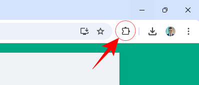
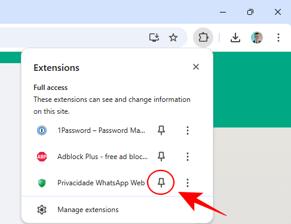
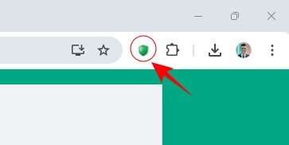

✅ Privacidade Total: Oculte completamente a exibição das informações no WhatsApp até que passe o mouse sobre elas.
🆕 Privacidade por Elementos: Oculte de forma individual nomes, fotos, preview das mensagens, mensages e entrada de texto.
OBS: Caso já tenha realizado este procedimento a seguir, não será necessário fazer novamente.
Para fixar sua nova extensão na barra de ferramentas do Chrome, siga os passos abaixo:
-
Clique no ícone de extensões do seu navegador.

O ícone de extensões geralmente parece como um quebra-cabeça no canto superior direito.
-
Localize a extensão "Privacidade WhatsApp Web" e clique no ícone de pin.

-
Verifique a barra de ferramentas

A extensão agora deve estar visível na barra de ferramentas do Chrome.